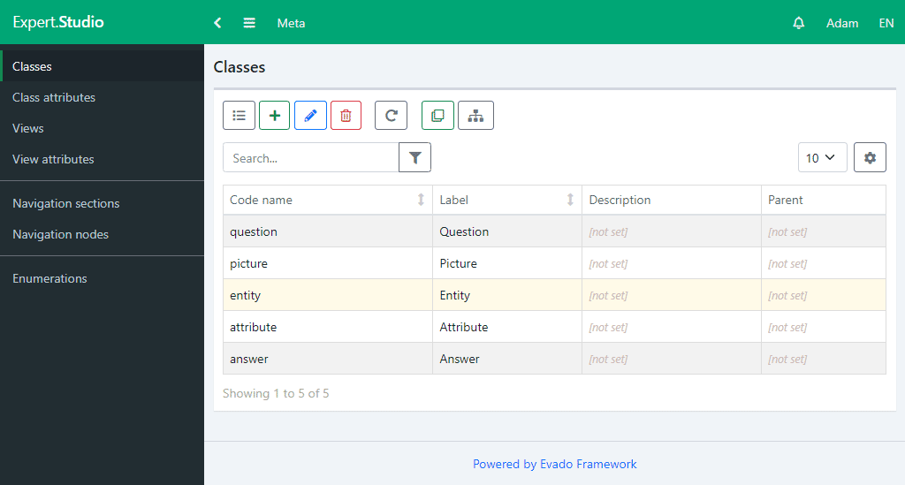

Main entities
Go to Studio module and create main app classes.
First of all, create an Entity class. This is the main element of the knowledge base, which will be the goal of solving our expert system. Add attributes Name and Picture.
Entities differ from each other not only by their name, but also, most importantly, by their attributes. To describe the attributes, create a Atribute class and add a string attribute Name to it.
Now go back to the Entity class and create a Attributes reference attribute that will store references to all attributes related to the entity.
Go to the Attribute class and create a back reference to the Entities. A back reference is not stored in the database, but is calculated based on the specified relationship. In this case, it will be possible to get all the entities that have this attribute.
Create a Question class. Add a Active logical attribute, which allows you to include or exclude a question from the app without having to delete it. Add a string attribute for the content of the question.
Next, create a Response class. Add a Text string attribute for the response content. Add a reference attribute of the Attribute, which will contain references to the properties of entities corresponding to this response. For example, the question "What does an animal eat?" it has two answers - "Meat" and "Plants". The answer "Meat" refers to the attribute "Carnivorous" and the answer "Plants" refers to the attribute "Herbivorous". Add a logical attribute Exception, which changes the value of the attribute list. An answer with an exception implies that all attributes except those specified in the list correspond to it.
Go to the Question class and create a Answers reference attribute for the list of valid answers to a question. In addition, to be able to select several answers at once, create a logical attribute Multiple.
The metadata has been created. Export them to the application via the button on the top panel.